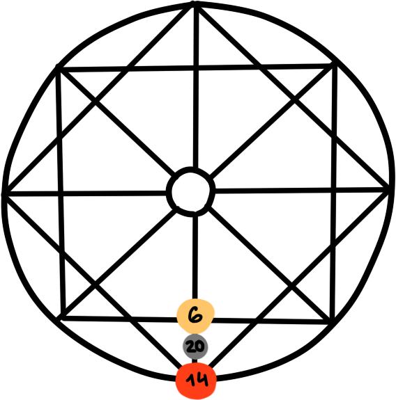

Расшифровка кармического хвоста
Кармический хвост «Маг, Волшебник» 18/9/9, 9/9/18, 9/18/9
В прошлой жизни у человека были магические знания, но он или их боялся или использовал во вред. Кроме этого, человек обладал природной мудростью, но был отшельником и люди, так и не узнали о его таланте.
Кармический хвост «Император» 12/16/4
Человек обладал властью, но использовал ее не правильно, во вред себе или другим людям. Упивался властью. Не уважал людей. Или наоборот, отказался от повышения, упустил возможности. Женщине важно укротить свою властность, стать мягче. Мужчине важно научиться уважать людей.
Кармический хвост «Предательства и страсти в семье» 15/5/8
В прошлой жизни человек обежал и предавал любимых. Причинял дискомфорт семье, например, был алкоголиком. Человек поддавался искушениям, страсти. Жил в беззаконии. Сейчас важно научится прощать, укротить свою страсть, соблюдать закон и порядок во всем.
Кармический хвост «Угнетенная душа» 21/4/10
В прошлой жизни, человек добровольно отказался от свободы и развития. Например, был рабом, которого отпустили, но он остался в прислуживании, т.к. тут все знакомо и понятно, комфортно и предсказуемо. А там страшно и неизвестно. В этой жизни важно стать номером 1. Уйти из под опеки родителей, не бояться уходить в свободное плаванье в рабочих процессах. Не сидеть под крылом, а отрастить собственные крылья.
Кармический хвост «Бунтарь» 15/20/5
«Бунтарь» пошел против рода и семьи. В семье были устоявшиеся правила и традиции, но человек пошел против этого, тем самым подняв бунт родственников, которые в свою очередь могли обозлиться или отказаться от такого родственника. Сейчас человеку важно наладить все «сломанные» отношения в роду, принять тех, от кого отказались, жить в мире с родителями. Для этого не обязательно жить с ними, в прямом смысле слова, и идти по их профессиональным стопам. Напротив, успокоить страсти в семье и гармонично соблюдать традиции рода, с традициями созданными в своей новой семье.
Кармический хвост «Воин» 12/19/7
В прошлой жизни человек воевал и убивал. Сейчас это может проявляться как воинственный и агрессивный характер. Это важно проработать особенно женщинам
Кармический хвост «Разочарование рода» 6/8/20
Душа разочаровала свой род в прошлом. Сейчас человек обладая талантом, не может его реализовать. Возможно в прошлом, душа попала под неравномерное распределение любви в семье. Или выбрала семью вместо любви, или наоборот: отказалась от семьи, ради любви. Задача сейчас — прославить свои род, благодаря своим талантам.
Кармический хвост «Физические страдания» 18/3/12
В прошлой жизни были человек страдал от какой-то болезни или был калекой. Не смог морально принять эти страдания. Он думал только о физическом недуге, сосредоточившись на материальном мире, но не на душе. В этой жизни человек может ухаживать за тяжело больным. Его задача помочь людям принять свою болезнь и обратить особое внимание на свои душевные качества (силу духа и т.д.), не давать людям падать духом и поддерживать их морально. Показать им что болезнь — это не наказание, а возможность.
Кармический хвост «Мир страстей и сказок» 9/15/6
В прошлой жизни был выбор между любовью и страстью. Поддаваться страстям — это низкая вибрация. Поднять страсти до уровня любви — это высокая вибрация души. В этом и состоит главная задача на это воплощение. А также важно не уходить и не закрываться от людей, не впадать в иллюзии.
Кармический хвост «Загубленный талант» 6/17/11
В прошлой жизни человек или не раскрыл свой талант или «зазвездился». Сейчас важно понять в чем ваша особенность, уйти от рутины и реализоваться через весь свой творческий потенциал. Не бояться светить и сиять на людях. Ответе себе честно на вопрос что вы любите? Туда и идите.
Кармический хвост «Духовный жрец» 21/10/16
В прошлой жизни человек не смог или не успел передать свои духовные знания другим. Это очень редкая карма. Чаще всего в этой жизни она реализуется через профессии: психолога, астролога, нумеролога, духовного наставника, священника и прочие смежные профессии изучающие дух и душу.
Кармический хвост «Физическая агрессия» 15/8/11
В прошлой жизни человек причинял физические страдания другим людям: бил, обижал, подавлял, насиловал. В это жизни все может быть наоборот: человек попадает под гнет другого, страдает от физического наказания других людей. Задача избавиться от внутренней агрессии и тогда вы перестанете притягивать обидчиков. Прийти к прощению и принятию.
Кармический хвост «Одинокая женщина» 3/9/12
Не по своей воли человек в прошлой жизни потерял любимого, не смог быть рядом с ним. Он ушел на войну. Их отношениям противились родственники. В этой жизни человек длительное время находится без отношений. Он закрыт от любви. Прячет свои чувства. Главная задача — открыть свое сердце.
Кармический хвост «Темный маг» 18/6/15
Если чувствуете в себе силу, силу влиять на людей, силу визуализатора — не используйте ее во вред.
Кармический хвост «Узник» 3/7/22
В прошлой жизни человек был в заточении. Был в плену или в тюрьме. Или был в плену зависимостей (алкоголь, еда, наркотики). Или был в плену у партнера (многоженство или муж тиран). Такое всегда оставляет отпечаток на душе. Сейчас может быть в паре с «Надзирателем». Задача — помогать невиновным обрести свободу.
Кармический хвост «Надзиратель» 9/3/21
В прошлом человек ограничивал свободу других людей и получал удовольствие от этого. Сейчас он может быть в паре с «Узником». Задача — не нарушать границы других людей. Уважать свободу выбора
Кармический хвост «Гордыня» 6/5/17
В прошлом обладал достатком и талантом и возгордился этим. Задача —не ждать, что все свалится с неба. Идти шаг за шагом к целям.
Кармический хвост «Разрушение и массовая смерть» 21/7/13
В прошлом человек создал оружие, которое уничтожило огромное количество людей. Это может быть бомба или яд. В этой жизни важно спасать жизни, при чем в массовом масштабе (хирург, психолог, коуч).
Кармический хвост «Душа, принесенная в жертву» 6/20/14
В прошлом, душу человека принесли в жертву. Возможно были семейные драмы. Род влиял на выбор партнера. Человек может стоять перед выбором: любовь или творчество; семья или любовь. Задача — научиться идти за любовью, сохранять семейные отношения и реализоваться через творчество.